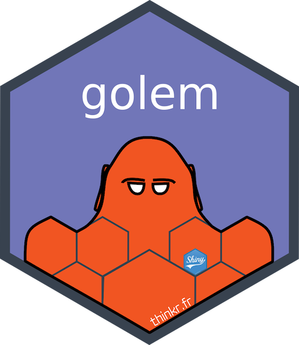

Insights and Innovations from Posit Conf 2023
Adrian Zetner
2024-01-24
Workshop 1: Big Data in R with Arrow
Big Data in R with Arrow
- What is Arrow?
- A toolbox
- Designed to improve
- Algorithm performance
- Data transfer efficiency
Big Data in R with Arrow
- Accomplished via in-memory columnar format
- Standardized
- Language agnostic
- Interaction via Arrow libraries
- C, C++, C#, Go, Java, JavaScript, Julia, MATLAB, Python, R, Ruby, and Rust.
{kind=link}
Parquet
- Further optimizations
- Run length encoding for duplicate values
- Dictionary encoding for long strings
- Projection and predicate pushdown
Big Data in R with Arrow
- NYC Taxi Dataset
- BIG data
- >40Gb on disk
- > 1.15 billion rows
Big Data in R with Arrow
arrow::open_dataset()- Pointer to data (in arrow)
- Build queries as normal with dplyr
Big Data in R with Arrow
arrow::compute()arrow::collect()
Big Data in R with Arrow
nrow()head(),select(),filter(), andcollect()across()
Big Data in R with Arrow
- Efficiently read + filter + join + summarise massive datasets
- Leverage Parquet file format and C++ libraries
- Simple interaction via queries build with dplyr
Workshop 2: Shiny in Production


Shiny in Production
Shiny in Production

Shiny in Production
Shiny in Production
01_start.Rfor original setup02_dev.Rin for ongoing work03_deploy.Rfor deployment
├── DESCRIPTION
├── NAMESPACE
├── R
│ ├── app_config.R
│ ├── app_server.R
│ ├── app_ui.R
│ └── run_app.R
├── dev
│ ├── 01_start.R
│ ├── 02_dev.R
│ ├── 03_deploy.R
│ └── run_dev.R
├── inst
│ ├── app
│ │ └── www
│ │ └── favicon.ico
│ └── golem-config.yml
└── man
└── run_app.RdShiny in Production
- App Scripts live in
R/directory - Defined front end (UI) and back end (server)
├── DESCRIPTION
├── NAMESPACE
├── R
│ ├── app_config.R
│ ├── app_server.R
│ ├── app_ui.R
│ └── run_app.R
├── dev
│ ├── 01_start.R
│ ├── 02_dev.R
│ ├── 03_deploy.R
│ └── run_dev.R
├── inst
│ ├── app
│ │ └── www
│ │ └── favicon.ico
│ └── golem-config.yml
└── man
└── run_app.RdShiny in Production
- App Scripts live in
R/directory
- Modules in individual files
- Encapsulate and repeat features
- Prevent collisions
- Logical organization
- Easier debugging
├── DESCRIPTION
├── NAMESPACE
├── R
│ ├── app_config.R
│ ├── app_server.R
│ ├── app_ui.R
│ ├── mod_picker.R
│ └── run_app.R
├── dev
│ ├── 01_start.R
│ ├── 02_dev.R
│ ├── 03_deploy.R
│ └── run_dev.R
├── inst
│ ├── app
│ │ └── www
│ │ └── favicon.ico
│ └── golem-config.yml
└── man
└── run_app.RdShiny in Production
Easily Added to Apps
Shiny in Production
Talks
Abstractions All the Way Down
“An abstraction” is the outcome of a process of deriving general rules and concepts from specific examples — a concept that acts as a common noun for all subordinate concepts and connects any related concepts as a group, field, or category.
In software engineering and computer science, abstraction is the process of generalizing concrete details, such as attributes, away from the study of objects and systems to focus attention on details of greater importance.
Abstractions All the Way Down
Head trunk only hold so much junk
Constrain complexity and separate concerns
All non-trivial abstractions, to some degree, are leaky
Abstractions All the Way Down: Assertions
Abstractions can leak so they must be permeable
No abstraction is right for everyone
Abstractions All the Way Down: Solutions
- Abstraction permeability allows for debugging
- Communication is key
- “Meet people where they are”
- 80-16-4 split of normal/advanced/guru users
Session Roundup
- Commit to Change: How to Increase Accessibility in Your Favorite Open Source Projects
- ShinyUiEditor: From Alpha to Powerful Shiny App Development Tool
- Parameterized Quarto Reports Improve Understanding of Soil Health
- Magic with WebAssembly and webR
- Automating the Dutch National Flu Surveillance for Pandemic Preparedness
Resources